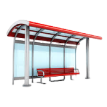
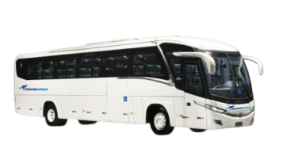

Horários
Ônibus 151: 08:00 - 08:35 - 09:25 - 10:00
Ônibus 271: 08:00 - 09:00 - 09:25
Ônibus 393: 08:00 - 09:00 - 09:30 - 10:00
Ônibus 152: 13:00 - 13:35 - 14:25 - 15:00
Ônibus 272: 13:00 - 14:00 - 14:25
Ônibus 393: 13:00 - 14:00 - 14:30 - 15:00
Ônibus 153: 18:00 - 19:35 - 20:25 - 21:00
Ônibus 273: 18:00 - 19:00 - 20:25
Ônibus 394: 18:00 - 19:00 - 20:30 - 21:00